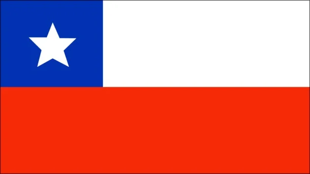
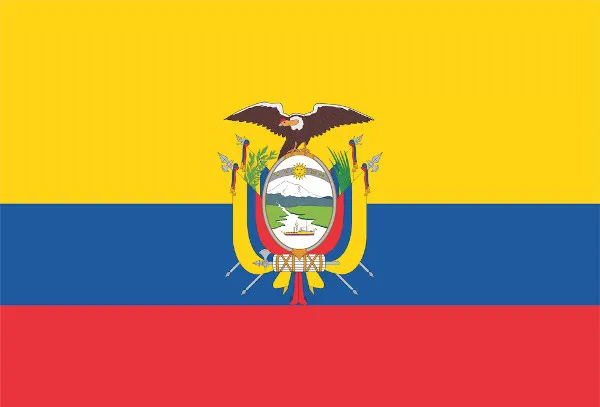
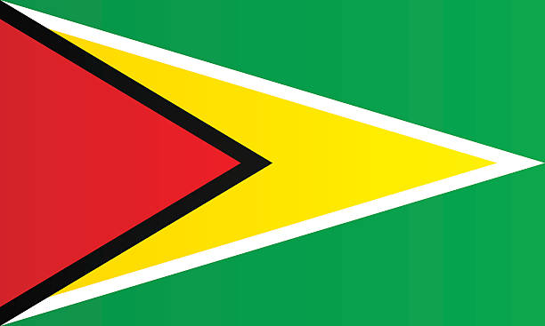
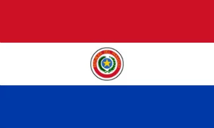
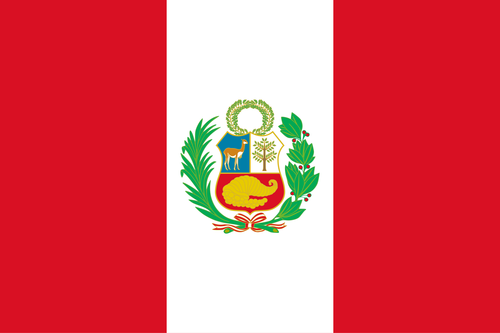
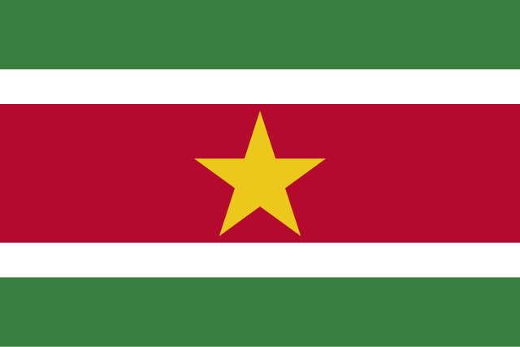

País: Argentina
Argentina, oficialmente República Argentina, é o segundo maior país da América do Sul em território e o terceiro em termos de população, constituída como uma federação de 23 províncias e uma cidade autônoma, Buenos Aires, capital do país.

País: Bolívia
Bolívia, oficialmente Estado Plurinacional da Bolívia, é um país encravado no centro-oeste da América do Sul. Faz fronteira com o Brasil ao norte e leste, Paraguai e Argentina ao sul, Chile e Peru ao oeste.

País: Brasil
Brasil, oficialmente República Federativa do Brasil, é o maior país da América do Sul e da região da América Latina, sendo o quinto maior do mundo em área territorial e o sétimo em população.

País: Chile
Chile, oficialmente República do Chile, é um país da América do Sul que ocupa uma longa e estreita faixa costeira encravada entre a cordilheira dos Andes e o Oceano Pacífico.

País: Colômbia
Colômbia, oficialmente República da Colômbia, é uma república constitucional do noroeste da América do Sul. Com uma população de mais de 47 milhões de pessoas, a Colômbia tem a 28ª maior população do mundo.

País: Equador
Equador, oficialmente República do Equador, é uma república democrática representativa localizada na América do Sul, limitada a norte pela Colômbia, a leste e sul pelo Peru e a oeste pelo oceano Pacífico.

País: Guiana
A Guiana, oficialmente República Cooperativa da Guiana, é um país no norte da América do Sul. Com uma população estimada para 2020 de 786 559 habitantes.

País: Paraguai
Paraguai, oficialmente República do Paraguai, é um país do centro da América do Sul, limitado a norte e oeste pela Bolívia, a nordeste e leste pelo Brasil e a sul e oeste pela Argentina.

País: Peru
Peru, oficialmente chamado de República do Peru, é um país sul-americano limitado ao norte pelo Equador e pela Colômbia, a leste pelo Brasil e pela Bolívia e ao sul pelo Chile.

País: Suriname
Suriname, oficialmente chamado de República do Suriname, é um país do norte da América do Sul, limitado a norte pelo oceano Atlântico, a leste pela França (Guiana Francesa), a sul pelo Brasil e a oeste pela Guiana.

País: Uruguai
Uruguai, oficialmente República Oriental do Uruguai, é um país localizado na parte sudeste da América do Sul. Sua população é de cerca de 3,5 milhões de habitantes

País: Venezuela